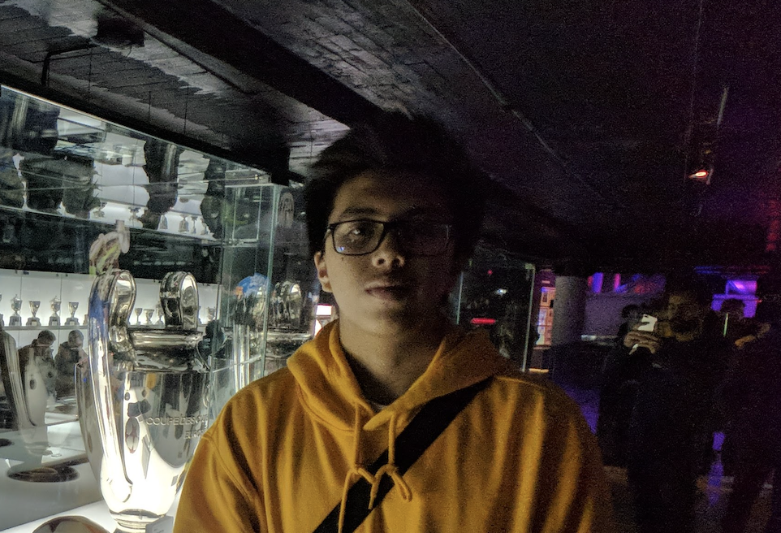
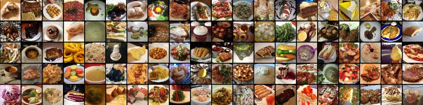
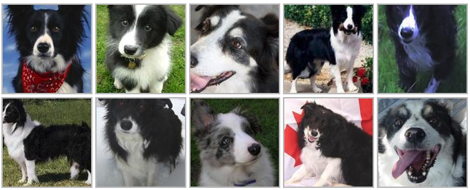

Hi, I'm Roderik Mogot!
Final year computer science student
Hi! I'm currently a final year student @BINUS University majoring the
computer science field. I'm also familiar with Python's known data
science libraries like NumPy, pandas, TensorFlow, and scikit-learn.
Experiences
Front-End Web Developer Intern
03/2018 - 05/2018 (3 months)
Projects

Food-101
👉 Built a simple CNN classification model to train on 5% of the
data
👉 Applied transfer learning to train on 100% of the data
👉 Deployed and hosted classification app using Streamlit

Dog Breed Identification
👉 Built a simple CNN classification model to train on 10% of the
data
👉 Applied transfer learning to train on 100% of the data
👉 Deployed and hosted classification app using Streamlit